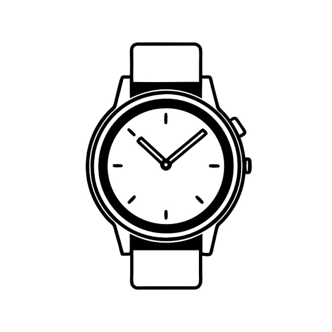
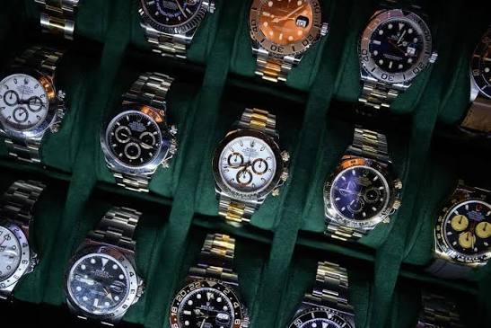
ساعت های لوکس از جمله محصولاتی می باشد که بدون توجه به روند اقتصادی حاکم بر بازار و جهان همیشه هواداران و علاقه مندان مخصوص به خود را دارد.
مقداری اگر شما هم مثل ما خورهی مد و فشن باشید و البته عاشق لوازم لوکس و گرانقیمت، حتما کنجکاو خواهید شد که برندهای لاکچری ساعت کداماند؟ و یا براساس چه رتبهبندی این برندها انتخاب میشوند؟ 10 برند لاکچری ساعت مچی کداماند؟ با ما همراه باشید تا به معرفی این ساعتهای مچی بپردازیم.
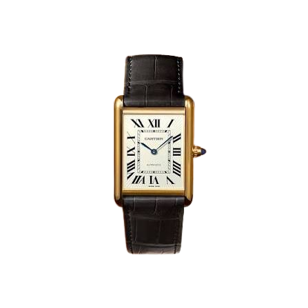
کارتیر بدون شک یکی از مشهورترین برندهای ساعت در جهان است که میتوان گفت محبوبیت خود را مدیون افراد مشهوری است که از محصولاتش استفاده میکنند. این برند در سال ۱۸۴۷ در پاریس تاسیس شد. هرکدام از ساعتهای این برند سبک و طرح متعلق به خود را دارند.
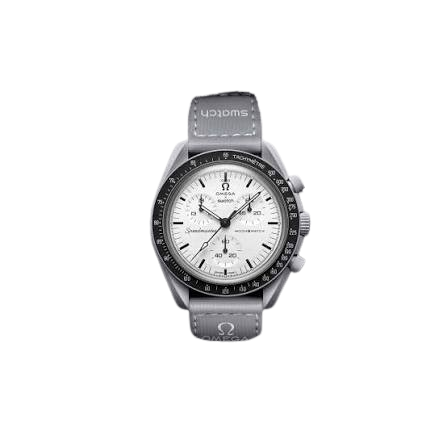
اومگا یکی از مشهور ترین برند های ساعت لوکس سويیس است که در سال 1848 تاسیس شد. این برند را به دقت، کیفیت ساخت و طراحی ماندگار میشناسند.
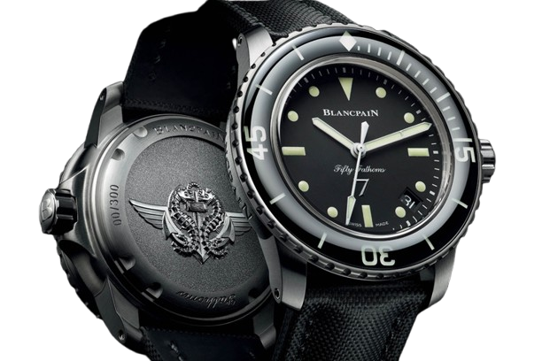
بلنک پین یک شاخه فرعی از گروه سواچ است. مانند برندهای مطرح ساعتهای لاکچری، این برند قدیمی در سال ۱۷۳۵ تاسیس شد. با رشد پررونق این برند در قرن ۱۹ تغییر و تحولات زیادی در انتظار ساعتهای بلنک پین بود. امروزه ساعتهای این برند با نوآوری جدید و مدرن ساخته میشوند. این برند هم طرفداران سبک ساعت مینیمال را راضی نگه میدارد و هم مدلهای با جزئیات بیشتر را تولید میکند.
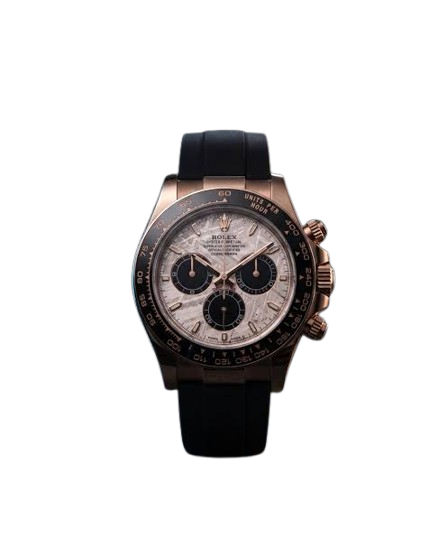
اگر بگوییم رولکس شناخته شده ترین نام در تولید ساعتهای لاکچری است، اغراق نکردهایم. رولکس در بین مردم عادی برندی بسیار تحسین شده است و هنوز هم در طراحیهای خود اصلیت بریتانیایی خود را حفظ کرده است. رولکس در لیست قدرتمندترین برندهای جهان مجله فوربز قرار گرفته است و همچنین با ساخت دوهزار ساعت در روز لقب بزرگترین تولید کننده ساعتهای لوکس در جهان را به خود اختصاص داده است.
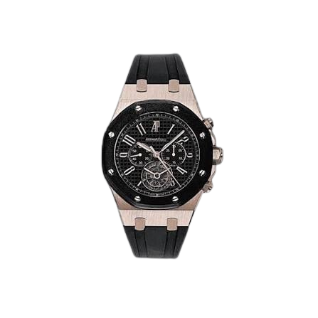
ساعت مچی اودمار پیگه Audemars Piguet یکی از منحصربهفردترین مدلهای ساعت مچی در بازار است. این برند در سال ۱۸۷۵ توسط Jules-Louis Audemars و Edward-Auguste Piguet تاسیس شد. این برند چیزی حدود ۳۶ هزار ساعت در طول یکسال تولید میکند. در واقع Tiffany & Co و Bulgari از موتورهای این برند در ساعتهای خود استفاده میکنند. همچنین این کمپانی به عنوان اولین تولید کننده ساعتهای اسپرت استیل شناخته شده است.
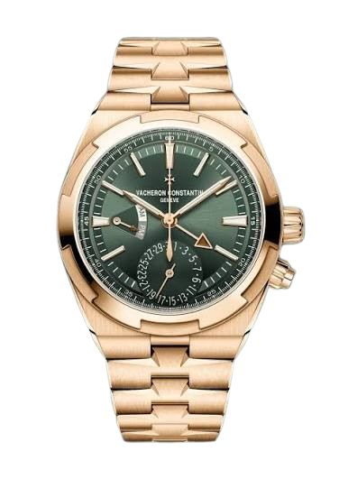
واشرون کنستانتین Vacheron Constantin یکی از قدیمیترین تولیدکنندگان ساعتهای لاکچری در جهان است. این برند توسط Jean-Marc Vacheron در سال ۱۷۵۵ در سوئیس تاسیس شد. ساعتهای واشرون کنستانتین منعکس کنندهی میراث قدیمی خود هستند و با جزئیات دقیق و اشکال و طراحی سنتی خود بیمانند هستند.
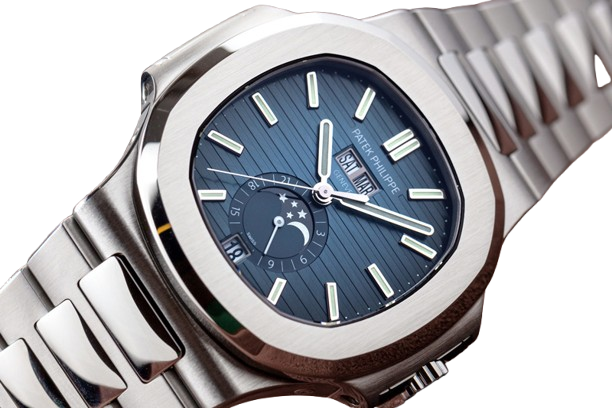
این برند سوئیسی ساعتهای لاکچری در سال ۱۸۵۱ تاسیس شد. مشخصهی ساعتهای این برند، مکانیک پیچیده و ظاهری کلاسیک و سنتی است که توسط خانوادههای سلطنتی و اشرافی زیادی در طول تاریخ استفاده شده است. البته خیلی از ساعتهای مچی هستند که اساسا لوکس نیستند ولی قابلیت و کاربردی فوقالعاده دارند مانند: ساعت مچی دنیل ولینگتون و … .
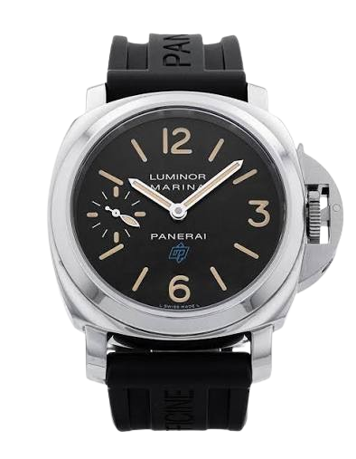
این برند درسال ۱۸۶۰ در فلورانس ایتالیا تاسیس شد. در حال حاضر دفتر مرکزی این برند در میلان ایتالیا واقع شده است. این شرکت ساعتسازی برخلاف بقیه برندها به دلیل سبک جسورانه و طراحیهای مینیمال و ساده خود شناخته شده است.
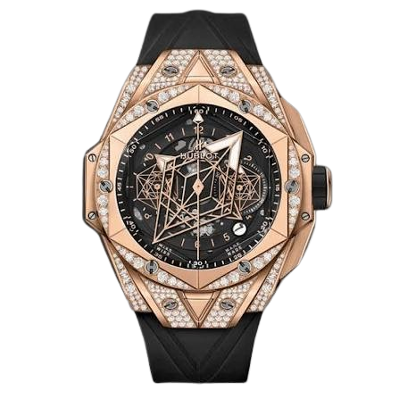
برند لاکچری و موفق هابلو یا هابلوت توسط فردی به نام کارلو کروکو در سال ۱۹۸۰ تاسیس گردید. در سال ۱۹۸۰ ساعت هايي که این شخص ساخت و تولید کرد جزو اولين ساعت هايي بودند که متریال اولیه تسمه ي آنها از جنس لاستيک طبيعي بوده است و تقریبا به مدت 3 سال بر روی ساعت های مذکور بررسی و تحقیق کرد.برند لاکچری هابلوت يک برند سوييسي می باشد که در زمان کنونی زير مجموعه ای از کمپانی با کیفیت فرانسوي LVHM می باشد.
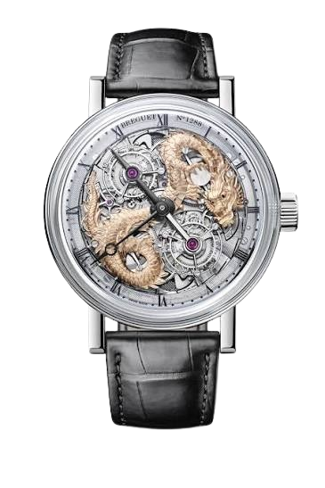
برگه یکی از قدیمی ترین و معتبر ترین برند های ساعت سازی لوکس سويیسی است . این برند به نوآوری های فنی، ظرافت هنری و طراحی کلاسیک شهرت دارد.